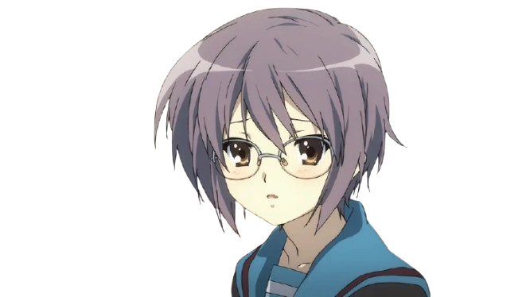

2000년대: 취향이 공유되는 언어가 되다
인터넷의 일상화와 '데이터베이스 소비'의 등장
1. 인터넷, 취향의 유통 공간
인터넷 보급으로 팬들의
취향 공유, 비평, 2차 창작 유통
이 일상화됨.
2. '데이터베이스 소비' (아즈마 히로키, 2001)
거대한 단일 서사보다
미시적 기호(모에 속성)
의 조합을 소비하는 경향.
츤데레, 안경, 소꿉친구, 메이드 등 정형화된 요소를 조건반사적으로 즐김.
3. 서사의 상실을 의미하는가?
➔ NO
당시 문화를 읽는 비평적 틀일 뿐, 팬들이 이야기에 관심을 잃은 것이 아님.
공존의 시대:
기호화된 캐릭터를 향한 애착이 오히려
거대한 서사에 더 깊이 몰입하게 만드는 원동력
으로 작동함.
📂 캐릭터를 구성하는 기호(속성) 데이터베이스
# 츤데레

# 안경
# 소꿉친구
# 메이드